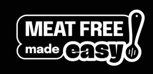
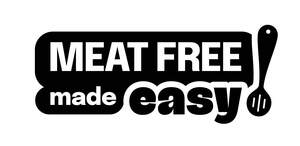

Trade Mark Journal No.2025/033 15 August 2025
UK00004200425 8 May 2025 (9,16,35,36,41,43)
Mark 1

Mark 2
Mark 3

- Class 9
- Downloadable software and applications for mobile devices; Downloadable software and applications for mobile devices software in the fields of plant-based nutrition, meal planning, and food shopping; Downloadable electronic data files featuring food and drink recipes; Downloadable software for food delivery and ordering; Downloadable software featuring recipes and information in relation to the food and drink industries and the plant-based food, drink and non-food industries; Downloadable software for researching, purchasing and booking products or services related to food and drink; Downloadable software for obtaining news, commentary and information in the fields of health, diet, nutrition and cooking; Downloadable software for accessing and purchasing food products; Downloadable software for consumer information and online retail services; Downloadable software for sending digital photos, videos, images, and text to others via the global computer network; Electronic publications; Webcasts; Podcasts.
- Class 16
- Printed matter and publications; Printed educational resources and materials; Printed newsletters, bulletins, articles and magazines; Printed research and scientific papers and documents; Printed promotional and advertising materials; Printed labels and packaging materials for the food and drink industries and the plant-based food, drink and non-food industries; Books; Recipe books; Meal Planners; Journals.
- Class 35
- Business and management consulting, strategic planning and business analysis and advisory services in relation to the food and drink industries and the plant-based food, drink and non-food industries; Advertising, marketing and promotional advisory and consultancy services; Design and development of individual and collaborative marketing strategies, campaigns, concepts and tactics; Marketing research services in the nature of tracking consumer behaviour and analysing consumer trends; Marketing and branding services, namely, providing customised communication campaigns and programs to obtain consumer insights and develop branding strategies; Business research and survey services; Analysing and compiling business data for market research purposes; Providing information and news in the field of business, namely, information and news on current events and on economic, legislative, and regulatory developments as it relates to and can impact businesses and organisations in the food and drink industries and the plant-based food, drink and non-food industries; Promoting public interest and awareness of developments, campaigns, products and initiatives in the food and drink industries and the plant-based food, drink and non-food industries; Promoting collaboration within the retail, scientific, research and provider communities to achieve advances in the field of products and initiatives in the food and drink industries and the plant-based food, drink and non-food industries; Organising business and collaborative networking events and workshops in the field of promoting industry growth in the food and drink industries and the plant-based food, drink and non-food industries; Subscriptions (arranging of) to newsletters, articles, publications, audio and visual material and databases in the field of products and initiatives in the food and drink industries and the plant-based food, drink and non-food industries; Membership club services, namely, providing on-line information to members in the fields of branding, business development, business marketing, and marketing; Business and professional networking services; Public relations services; Event planning and management for marketing, branding, promoting or advertising the goods and services of others; Rental of publicity and marketing presentation materials; Preparing speeches and oral presentations for others for use in marketing; Business consultation and management regarding marketing activities and launching of new products; Distribution of publicity materials, namely, flyers, prospectuses, brochures, samples; Loyalty, incentive and bonus program services for customers; Development of business organisation strategies relating to corporate social responsibility (CSR); Information, advice and consultancy in relation to all the aforesaid services.
- Class 36
- Fundraising and sponsorship services; Arranging of fundraising events; Arranging of charitable fundraising events; Financial sponsorship of awards and awards ceremonies and competitions and of business, entertainment, cultural and educational events; Information, advice and consultancy in relation to all the aforesaid services.
- Class 41
- Education and training in relation to advertising, promotion, marketing, sales and business strategic development and planning; Arranging and conducting of educational and training workshops, seminars, classes, symposia, conferences, congresses, exhibitions, symposiums and events, including online; Membership club services, namely, providing education and training to members in the field of advertising, marketing, promotion, research, sales and business strategic development and planning; Publication of newsletters; Education and training services, namely, organisation and providing of online non-downloadable webinars in the food and drink industries and advertising, marketing, promotion, research, sales and business strategic development and planning; Education services relating to sustainable cooking and eating habits; Providing online non-downloadable electronic publications in the nature of books, magazines, brochures, articles and newsletters in relation to goods, services, research, developments and initiatives in the food and drink industries and the plant-based food, drink and non-food industries; Providing commercial information updates, newsletters, articles, publications and reports online and over a global computer network in the fields of advertising, marketing, business, commerce, and industry; Providing online non-downloadable videos and multimedia content in the food and drink industries and the plant-based food, drink and non-food industries; Conducting public education campaigns to raise awareness of the environmental, health, and ethical aspects of the plant-based food, drink and non-food industries; Information, advice and consultancy in relation to all the aforesaid services.
- Class 43
- Services for providing food and drink; Provision of food and drink related to plant-based alternatives to meat products; Provision of food and drink related to the reduction of animal products; Food preparation consultation; Food preparation services featuring plant-based, healthy alternatives to meat products; Catering services for corporate events; Catering services specialising in plant-based and vegetarian cuisine; Advice concerning plant-based cooking recipes; Providing commercial information to food providers about plant-based campaigns; Provision of meat-free food and beverages in hospitality settings; Provision of event facilities, temporary office, and meeting facilities; Booking and reservation services for meat-free and vegetarian dining experiences; Food delivery services; Information, advice and consultancy in relation to all the aforesaid services.
BE KIND FOODS LTD
Representative: Basck Limited